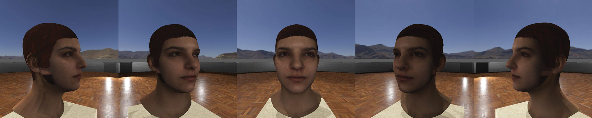

Δημιουργία Συνόλου Τρισδιάστατων Μοντέλων Προσώπου από Εικόνες για Εφαρμογές Αναγνώρισης
Εκφράσεων
Η διπλωματική μου εργασία για το ΑΠΘ αφορά την χρήση συστημάτων βασισμένων σε νευρωνικά δίκτυα για την
εξαγωγή
δεδομένων και παραμέτρων εκφράσεων προσώπου από εικόνες και βίντεο. Σκοπός είναι η δημιουργία τρισδιάστατων
μοντέλων προσώπου που αποτυπώνουν ανθρώπινες εκφράσεις στιγμιαία ή σε μορφή animation και στην συνέχεια
δημιουργία σχετικής βάσης δεδομένων και χρήση τους σε άλλα πεδία ή πειράματα.
Το μοντέλο DECA (Detailed Expression Capture and Animation) χρησιμοποιήθηκε για την εξαγωγή παραμέτρων
επικεντρωμένων μόνο στο πρόσωπο. Το μοντέλο αυτό παράγει τρισδιάστατα μοντέλα ενός ανθρώπινου κεφαλιού με την
έκφραση δοσμένων εικόνων ή βίντεο καθώς επίσης εξάγει υφή δέρματος και χαρακτηριστικών από την εικόνα την
οποία χρησιμοποιεί στα τρισδιάστατη μοντέλα. Έπειτα έγινε χρήση κατάλληλου κώδικα σε Python
για την επεξεργασία και βελτιστοποίηση των αυτόματα παραγόμενων υφών.
Τέλος χρησιμοποιήθηκαν τα δεδομένα σε προσομοιώσεις animation για την δημιουργία βάσης
δεδομένων με φωτογραφίες από ανθρώπινες εκφράσεις με ποικίλες παραμέτρους λήψης.



×

Παραδείγματα εικόνων αποτελεσμάτων